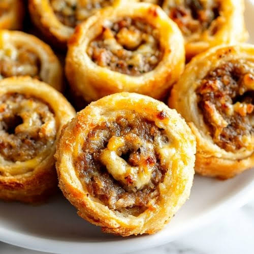

Recipe 3
Back to Homepage

This is that description for the Gluten Free Sausage Pinwheels..... I got nothing you guys
Ingredients
- 2C Shredded Mozzarella Cheese
- 2oz Cream Cheese
- 3/4C Almond Flour
- 2tbsp Flax Seed
- 1/2lb Breakfast Sausage
- 3oz Cream Cheese
Steps
- In a microwave safe bowl combine Shredded Mozzarella and Cream Cheese.
(Heat in 30 sec. Increments until completely melted)
- Add in Almond Flour and Flax Seed
- Between 2 layers of parchment paper, roll out the dough to about 12x9
- Mix the Sausage and Cream cheese, Once combined spread it on the dough
- Roll tightly into a log
- Slice rolls about 1.5 inches wide
- place on greased cookie sheet and bake for 12-15 min at 400 degrees